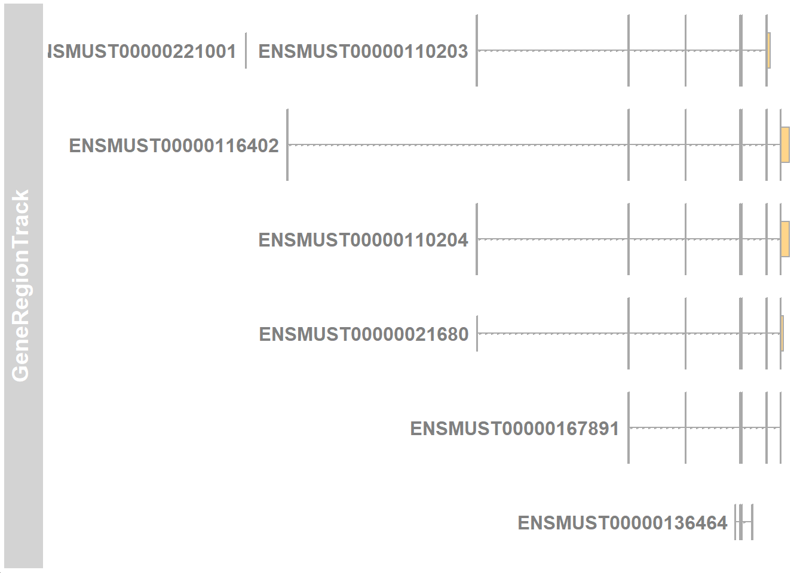
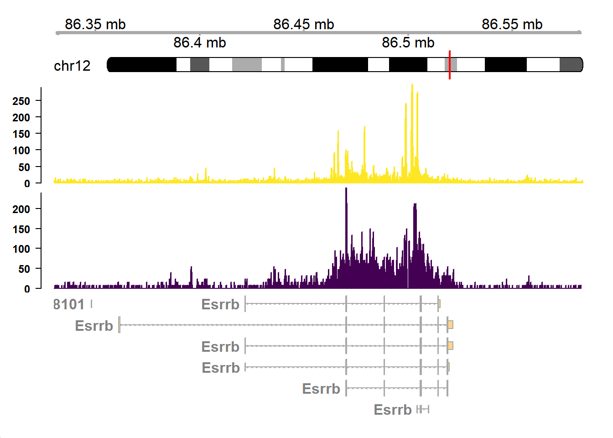

This tutorial covers plotting of track file such as bigwig file for better visualization. This tutorial was constructed for The Laboratory of Cell Systems, Institute for Protein Research, Suita, Osaka, Japan.
The data used in this tutorial is ChIP-seq bigwig file obtained from
Load important libraries
Then we have to make txdb file.
GTF_dir <- "D:/Rmd_compilations/20191226_gviz/Mus_musculus.GRCm38.98.chr.gtf"
# mm10_txdb <- makeTxDbFromGFF(GTF_dir,
# format="gtf",
# organism="Mus musculus",
# dbxrefTag = "gene_name")
#
#
# saveDb(mm10_txdb, "mm10.txdb")
mm10_txdb <- loadDb("D:/Rmd_compilations/20191226_gviz/mm10.txdb")
Firstly, set the options as we are using Ensembl GTF file.
Then we read the genome track and the track for the wanted gene region.
# read the genome, there is no need to put any argument
gtrack <- GenomeAxisTrack()
# specify the start and end of chromosome (this has to be specified after looking at igv)
chr_no <- "12" # chromosome number
chr_start <- 86330000 # start of region
chr_end <- 86583978 # end of region
# specify the start and end of the track you want to view with the chromosome number
gtTrack <- GeneRegionTrack(mm10_txdb,
chromosome=chr_no, # chromosome number
start=chr_start, # start of region
end=chr_end, # end of region
transcriptAnnotation="gene_id", # symbol is the gene symbol
fontsize.group=20 # free to adjust font size
)Try plotting the tracks

Get the ideogram track. This can show the position of the track in the chromosome. This function automatically downloads annotation from database, therefore we need to specify the chromosome name in ucsc naming (with chr prefix). However, after getting the information, we need to return it back to without chr prefix naming.
itrack <- IdeogramTrack(genome="mm10",
chromosome=paste0("chr",chr_no), # specify chromosome in ucsc naming
from =chr_start,
to=chr_end)
itrack@chromosome <- chr_no
# remove chr from chromosome naming
levels(itrack@bandTable$chrom) <- sub("^chr", "", levels(itrack@bandTable$chrom), ignore.case=T)
Now we import the bigwig file of our wanted data
For ensembl annotation, the chromosome is named “1” instead of “chr1”, therefore there is a need to remove the chr string. However, the important thing is to have a consistent chromosome naming scheme (with or without chr for all of the annotation). In this tutorial, I will remove all the chr strings.
bw_med1 <- import.bw("D:/Rmd_compilations/20191226_gviz/Med1.bigwig", as="GRanges")
bw_h3k <- import.bw("D:/Rmd_compilations/20191226_gviz/H3K27Ac.bigwig", as="GRanges")
# change chr name to without chr (this depends on the data)
bw_med1@seqnames@values <- str_replace_all(bw_med1@seqnames@values, "chr", "") %>% as.factor()
bw_h3k@seqnames@values <- str_replace_all(bw_h3k@seqnames@values, "chr", "") %>% as.factor()
bw_med1@seqinfo@seqnames <- str_replace_all(bw_med1@seqinfo@seqnames, "chr", "")
bw_h3k@seqinfo@seqnames <- str_replace_all(bw_h3k@seqinfo@seqnames, "chr", "") Then we specify which part of data we want to show.
# track 1 med1
med1_track <- DataTrack(range=bw_med1,
chromosome=chr_no,
from =chr_start,
to=chr_end,
ylim=c(0,290),
col.histogram=c("#FDE725FF")
)
# track 2 h3k
h3k_track <- DataTrack(range=bw_h3k,
chromosome=chr_no,
from =chr_start,
to=chr_end,
ylim=c(0,240),
col.histogram=c("#440154FF")
)Before plotting the track, we want to convert the gene id to gene symbol.
convertensembl <- function(x = gtTrack){
require(biomaRt)
require(org.Mm.eg.db)
mouse <- useMart("ensembl", dataset = "mmusculus_gene_ensembl")
convertedgene <- getBM(attributes = c("ensembl_gene_id", "external_gene_name"),
filters = "ensembl_gene_id",
values = x@range@elementMetadata@listData$gene,
mart = mouse)
for(i in 1:nrow(convertedgene)){
x@range@elementMetadata@listData$gene <- x@range@elementMetadata@listData$gene %>%
str_replace_all(convertedgene[i,1], convertedgene[i,2])
}
return(x)
}
# convert ensembl id to gene name
gtTrack <- convertensembl(gtTrack)Finally combine the tracks
combinetracks <- plotTracks(c(gtrack, itrack, med1_track, h3k_track, gtTrack),
transcriptAnnotation="gene",
type="hist",
from =chr_start,
to=chr_end,
background.title = "white",
fontcolor = "black",
col.axis="black",
fontsize=15,
showTitle=F,
margin=40,
innerMargin = 10
)
A work by Johannes Nicolaus Wibisana
johannes.nicolaus@gmail.com